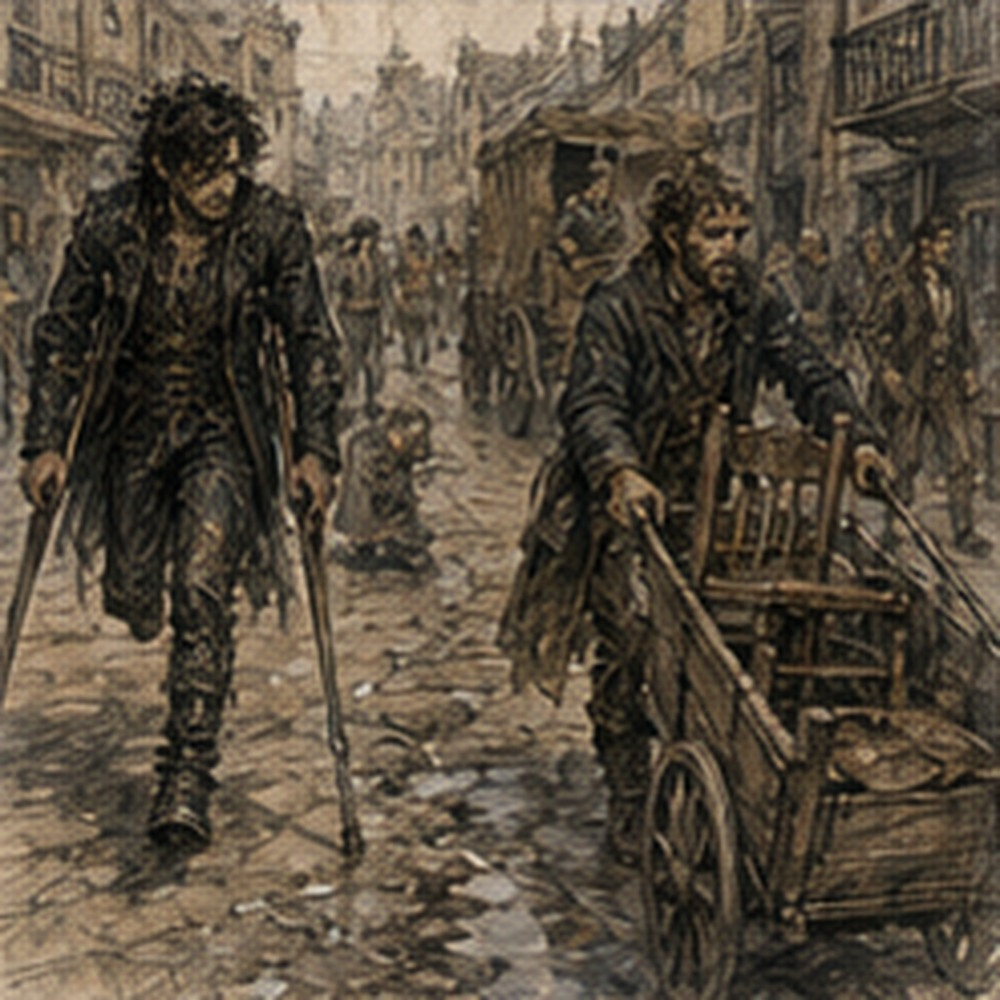
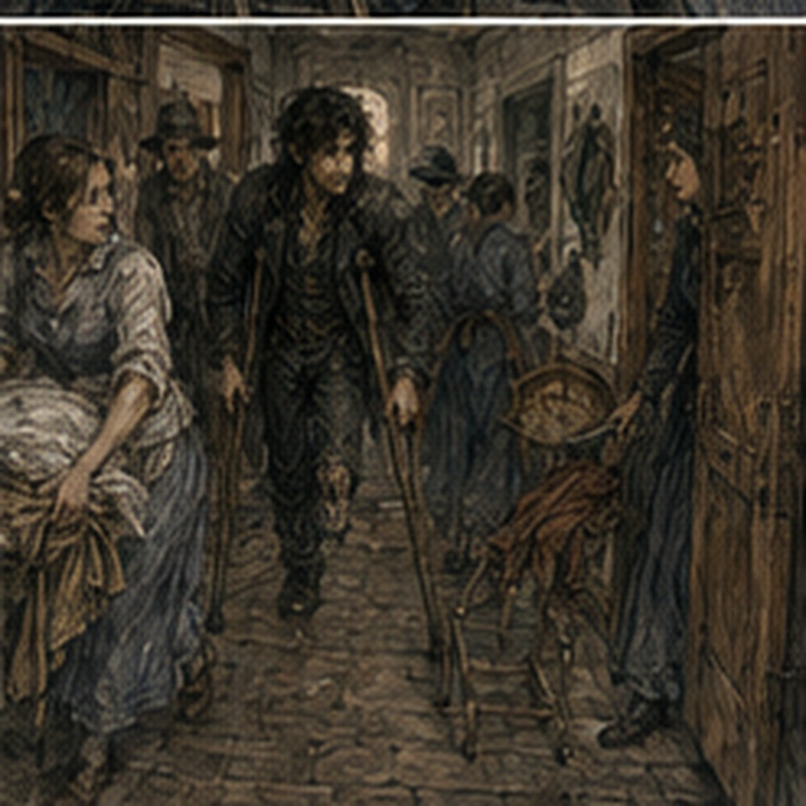

Jorren had lied about the chair. It was not behind the handcart. It was on it. Folded badly against my bag and coat like a threat. I stopped just outside the Guild gate. Jorren looked at me.
“No.”
“You have not even heard the proposal.”
“I can see the proposal.”
“It has a seat.”
“So does the city.”
“Less portable.”
“I am not getting in that.”
“Good. I hate pushing people.”
He took the handcart handles. I looked at the street. Carrow looked normal. Offensive. A delivery wagon moved through the intersection. Two apprentices crossed in front of it and got yelled at. Someone argued over onions.
A woman opened shutters above a dye shop. The street had not learned anything. Crutches forward. Right foot. Crutches. Right foot. The rough wraps on the tips caught stone better than I expected. Good. The first twenty feet were easy. That was dangerous. My shoulders were fresh. My right leg felt strong. The road immediately looked conquerable. Then the paving changed. Not much.
One row of stone had settled lower. An inch. Maybe less. I had crossed it hundreds of times. Now I stopped. Jorren stopped too.
“You know I can see obstacles.”
“I didn't say anything.”
“You stopped.”
“Yes.”
“Which is saying something with your whole body.”
“Fine.”
I studied the dip. Crutches down on level stone. Right foot past. Simple. I did it. Good. Ten more feet. A gutter. Not a deep one. Enough. Crutches over. Right foot after. My left foot tried to step into the gutter. Phantom ankle rolled. My actual hip moved. I caught it. No help. Good. Jorren said nothing. Better.
At the first corner a baker's boy recognized me. I knew because he looked at my face, then the crutches, then the missing part of my silhouette, then back at my face.
“Greg?”
“Yes.”
“Oh.”
Excellent conversation. He held the bakery door open for someone else. Then kept holding it because he thought I was going inside.
“I am not.”
“Oh.”
He let go. The door shut. Perfect. We moved. The city had become full of tiny negotiations nobody had ever formally assigned. Who went first through a narrow space. Whether a cart wheel left enough room. Whether I could step off the curb before the next wagon.
Whether someone holding a door was helping or making me hurry. Whether I could stop without blocking three people. The answers were not difficult. There were simply more of them. By the second corner my palms hurt. Not badly. Beginning. Hessa had been right. Again. Unacceptable.
“Wraps,” I said.
Jorren glanced over.
“What?”
“Hands.”
“You want cloth?”
“Yes.”
“Now?”
“No.”
“You said the word like I should produce it.”
“You carry things.”
“I am not Sevren.”
“Worse.”
We continued. A cart came behind us. I heard it. Normally I would move to the side without thought. Now I looked first. Stone wall on right. Fruit stall left. Narrow. I stopped near the wall. Jorren moved the handcart in front of me. The driver slowed. Not dramatically. Enough.
“Room?”
He asked it like any other traffic question.
“Yes.”
He passed. One wheel came closer than I liked. Not dangerous. I watched it anyway. My body did something. Not panic. Tightness. The rear wheel. Stone lip. No. Street. Different cart. Different wheel. I breathed. Jorren looked back.
“Fine.”
“I didn't ask.”
“You were going to.”
“No.”
Good. We walked another half block. Then I needed the chair. I hated this. Not because I was collapsing. Because I could continue. Probably. Which meant stopping felt optional. And optional weakness was worse. My shoulders burned. Right calf tight.
The residual limb had begun throbbing in time with movement despite never touching ground. Sweat under my shirt. Poppy not strong enough to erase any of it. I stopped beside a shuttered tailor's shop.
Jorren leaned on the handcart. I looked at the folded chair. He looked away. Asshole.
“Five minutes.”
He unfolded it. No comment. I sat. My entire body exhaled. Traitor. The street continued. People passed. Most did not care. One older man nodded at the crutches like we belonged to the same terrible club. He had both legs. Maybe arthritis. Maybe nothing. I nodded back anyway. A woman I did not know said, “Guild yard?” News traveled.
“Yes.”
“Bad business.”
“Yes.”
She kept walking. Good. Jorren bought water from a stall. I tried to reach for the cup while holding both crutches. Then remembered I was sitting. Easy. That almost made me angry. I drank.
“Ready?” Jorren asked.
“No.”
“Good,” he said.
“What?”
“You always say yes,” Jorren said.
“I do not.”
“You do.”
“I frequently say no.”
“To other people.”
Fair. We sat another minute. Then I stood. Crutches. Right foot. The chair went back on the cart. The lodging was six blocks from the Guild. I knew this in walking time. I did not know it in crutch time. Different unit.
*
The green door was worse than the street. One shallow stone step. Threshold. Door that opened inward. Nothing dramatic. Everything annoying. The keeper had already opened it. She stood inside. Gray hair wrapped in a scarf. Apron. Arms crossed.
“You look thin.”
“I lost weight.”
Jorren choked. She stared at me. Then laughed once.
“Still stupid.”
“Apparently.”
Good. No pity. The step. I had done three with a rail. This one had doorframe. Better. Crutches close. Right foot. Up. Doorframe hand? No. Two crutches. I moved one inside. Then the other. Right foot up. Easy.
Except the doorway narrowed the crutch angle and my right shoulder clipped the frame. Small. I stopped. Reset. Through. Inside. Success. The keeper said, “Storage room.”
“Temporary room,” I said.
“Storage room,” she repeated.
“Traitor.”
She pointed down the short hall. I knew the house. Of course I knew it. Kitchen ahead. Stairs right. My stairs. I looked. Fourteen. From below they appeared easy. Narrower than I remembered. Steeper? No. Same.
I could see the landing window. The wall contact really did disappear there. Stupid window. My room was up there. I could probably do it. Not safely. Could. Not safely. Different. I turned away.
This hurt more than expected. The storage room was behind the kitchen. Door half-height wider than my upstairs door. Convenient. I hated it immediately. Sacks had been moved to one side. Three wooden crates stacked against the wall. A folded table. Broken chair. A mop. Two baskets. The cot stood where sacks had probably been yesterday. Clean sheet. Blanket. Small stool beside it.
One oil lamp. No washbasin. No mirror. Window at ground level looking into the side alley. The room smelled like flour, dust, onions, and old wood.
“Home,” Jorren said.
“Die.”
“Temporary home.”
“Better.”
The keeper said, “Kitchen basin for washing. Don't soak the bandage. Privy out back. Food here if I'm cooking. If not, you solve your own life.”
“Good.”
“If you fall, don't break the table.”
“Concern noted.”
She left. I looked at the cot. Lower than the infirmary bed. Too low. Maybe. I approached. Crutches. Turn. Back until right calf touched cot. Crutches one side. Reach. Sit. Too fast. The cot creaked. Residual limb hurt. Fine. Getting up would be harder. I already knew. Jorren put my bag on the stool. Then the wooden horse. Then the calendar. Then the mirror.
He had actually brought it. Small oval frame. Same one. I stared.
“Where?”
I asked.
“What?”
“Put it somewhere.”
“There is nowhere.”
True. He leaned it against a crate. The angle caught half my face and most of the ceiling. Good enough. I looked nineteen. Still. Uneven beard. Messy hair. Tired eyes. Crutches reflected behind me. The blanket ended strangely. I looked away. Not symbolic. Just accurate.
“Your soap.”
Jorren tossed it onto the stool. I caught it. Good.
“Anything upstairs?”
Everything. Bed. Clothes. Sword. Probably onions. No, onions downstairs kitchen maybe. My other shirts. Pants. Notebook. Washbasin. Boots? One boot with me. The left boot probably gone from yard or hospital. Sword. I had not thought about sword.
“Bring my sword.”
Jorren looked at me.
“Why?”
“It is mine.”
“You're not fighting anyone.”
“I didn't say I was.”
“Fine.”
“And two shirts.”
“Which?”
“Any.”
“Pants?”
“Yes.”
“How many?”
“Two.”
He sighed.
“Notebook?”
“Yes.”
“Blanket?”
“No.”
“Pillow?”
I looked at the cot pillow. Thin.
“Yes.”
“Anything else?”
I almost said everything.
Instead:
“That's enough.”
Jorren went upstairs. I listened. His steps. Fast. Ordinary. Twelve. Landing. Two. I counted. Of course. The ceiling creaked overhead. My room. Somebody moving inside it. Not me. My phantom foot itched. Excellent. I tried to scratch it against the cot frame. Nothing. The itch intensified. I gripped my thigh. Wait. It faded.
Jorren came back with sword, shirts, pants, notebook, pillow. He had also brought my belt. Good. He put the sword against the crates. Wrong angle. I corrected it. From the cot.
“Other side.”
He moved it.
“More upright.”
He moved it.
“Not against mirror.”
“Greg.”
“Fine.”
He put it down.
“Better.”
He looked around.
“You need a shelf.”
“No.”
“You have no place for anything.”
“Temporary.”
“Yes.”
“No shelf.”
“Fine.”
He sat on a crate. The room was small enough that his knees almost touched the cot. This was not my room. The fact repeated itself without assistance.
“Food?” he asked.
“Yes.”
“Hungry?”
“Yes.”
“Good.”
The keeper brought soup and bread. She put it on the stool. Then stopped. The stool held my bag, soap, calendar, horse, pencil, medical papers. No room. She looked at me. I looked at the stool. Logistics. Jorren moved everything to the crate beside the mirror. Soup down. Bread. Fine.
“Thank you,” I said.
The keeper nodded. No ceremony. I reached for soup. Then realized I could not comfortably hold the bowl and reposition myself on the cot. Jorren moved it closer.
“I had it,” I said.
“You didn't,” Jorren said.
“Yes.”
“Eat,” he said.
I ate. Good soup. Too much salt. Perfect.
*
The privy became a campaign. Not a large one. That made it worse. Kitchen. Back threshold. Eight yards of packed dirt. Privy step. Door. I could do all of those things individually. Together required planning.
I waited too long because I did not want to do it. This was stupid. By the time I admitted I needed to go, urgency had become another variable. Excellent. Jorren was still there.
“No.”
He had not spoken.
“I know that face.”
“Which face?”
“The chamber pot face.”
“I did not make a face.”
“You absolutely did.”
“I am going outside.”
“Good.”
He stood.
“I do not need escort.”
“I'm going to the kitchen.”
“Convenient.”
“Yes.”
Crutches. Up from cot. Harder than infirmary chair. Low seat. Push. Right leg. Hands. I made it. Good. Kitchen floor uneven plank. Fine. Back door threshold higher than front. Of course. I stopped. Crutches over. Right foot. My body tried left. Ignored. Through. Packed dirt. Different. Crutch tips sank slightly. Not much. Enough. Energy changed. The ground was dry. Thank every god.
I moved slowly. Right foot placement mattered. Crutches bit differently. One small stone rolled under the right sole. I stopped. Reset. The privy step was taller than the front door step. Why? Because no one had designed my life. Fine. One crutch in doorway. One outside. Right foot up. Then narrow interior. No room to turn normally. I improvised carefully. Not heroically.
The whole process took forever. When I came back out, Jorren was sitting on the kitchen step eating bread. He looked at me.
“Successful?”
“Die.”
“Good.”
Return trip. By the time I reached cot, sweat had soaked the back of my shirt. My right thigh trembled. Hands hurt. Residual limb throbbed. I sat. Breathing hard. Jorren stood in doorway.
“Chair outside?”
“No.”
“Stool halfway?”
“No.”
“Why?”
“Because I said no.”

“Excellent engineering.”
“Fuck you.”
He left the argument there. Good. I lay back. The cot pillow was better. My pillow. That helped more than it should have. I slept.
*
When I woke, Jorren was gone. Good. Also bad. The room was quiet. Kitchen sounds beyond wall. Keeper chopping something. A cart outside. Voices. Normal life. I needed water. Cup on stool. Pitcher? No pitcher. Kitchen. I stared at the cup.
Could carry cup with one hand if I tucked one crutch under arm? Bad. Could hop without crutches? No. Could ask keeper? Yes. Did not want to. Could fill cup and hold it in teeth? Ridiculous. Maybe. Could put cup inside shirt? No. Could use pouch? For water? No.
This was exactly the kind of problem I used to enjoy. Small. Bounded. Physical. Easy to improve. I hated it now. I sat there for perhaps two minutes. Then yelled, “Could I get water?” The keeper yelled back, “Yes.” No shame. No speech. She brought a pitcher. Set it on floor beside stool.
“Keep it.”
“Thanks.”
“Don't pour it on your bandage.”
“I know.”
“Good.”
She left. Problem solved. I felt cheated. Then stupid. Then thirsty. I drank.
*
Dorn came before evening. He had the second glove. Clean. Mostly. Dark stain near wrist. I took it.
“Blood?”
“Some.”
“Mine?”
“Probably.”
“Useful.”
He sat on the crate Jorren had used. Looked uncomfortable. Not physically.
“Ressa came?”
“Yes.”
“She told me.”
“Frame moved.”
“Yes.”
“Bram.”
“Yes.”
“Good.”

Dorn nodded. He looked at the crutches. Then mirror. Then glove in my hand.
“I am sorry.”
There. Simple.
“Not your fault.”
He flinched. Interesting.
“I know.”
Do you? I almost asked. Did not. He rubbed one thumb along a scar in his palm.
“The cart is under hold.”
“For investigation?”
“Finished investigation. Guild wants wheel and suspension checked again before return.”
“Strap?”
“Fine.”
“Springs?”
“Fine.”
“Brake?”
“Fine.”
“Then?”
“Procedure.”
Reasonable.
“Will you use it again?”
“Yes.”
I looked at him.
“How do you feel about that?”
Dorn frowned.
“What?”
“The cart.”
“It's a cart.”
Good. Maybe not enough. He continued.
“I'll check it.”
“More than before?”
“Yes.”
There.
“Forever?”
“Probably for a while.”
“Until you stop.”
“Yes.”
We sat. He looked at the glove.
“Seven copper?”
“Everyone knows.”
“Ressa told me.”
Terrible city.
“Did she tell you why you recommended me?”
Dorn looked confused.
“You stopped early.”
“I know.”
“You still do.”
I looked at him.
“No idea what that means now.”
“Me either.”
Good answer. He stood.
“Need anything?”
“No.”
Then:
“Could you bring my other boot?”
He looked at the one under cot.
“The left?”
I stopped. Why? I did not need it. Would never wear it. Probably. Maybe leather useful. No. Not now.
“Never mind.”
Dorn nodded. No question. He left. The glove remained in my lap. Both gloves now. One stained. Pair. That felt wrong. I put them beside the sword.
*
Evening food came on a plate. Rice. Beans. Egg. I could carry the plate from stool to lap. Easy. The keeper had solved carrying by bringing it. Again. I ate. Then tried changing pants. This was worse than the privy. Not medically. Personally. Standing to pull them up was unsafe alone. Seated worked until hips. Then what? Lean side to side. Lift.
Shift. Right foot planted. Hands needed for pants. No hands for balance. Bed behind. Cot. Could do it lying down. Obviously. I lay back. Pants. Right leg through. Left side over bandage carefully. Pull.
Hip lift using right foot and shoulders. My body tried to brace with left heel. Nothing. I nearly twisted. Stopped. Reset. Right foot. Shoulders. Lift. Pull. Success. Exhausting. I had dressed myself. Congratulations. No one there to say it. Good. I laughed anyway. Short. Then the phantom toes curled. Of course.
*
Before dark, I tried washing. The keeper had left a basin on the kitchen table. Not for me specifically. Probably. I chose to believe not. Getting there was easy now that I had already done it twice. That was dangerous. Familiarity arrived before competence. Crutches. Right foot. Kitchen. I leaned both crutches against the table. Immediately hated that. Too far if I lost balance.
I moved one closer. Then realized I needed both hands. Fine. Chair. There was a kitchen chair. Higher than cot. Good. I sat. Shirt off. Easy. Except pulling it over my head changed balance more than expected. My body tried to steady with the missing foot. Again. I stopped with the shirt over my face. Excellent. Blind, half naked, one foot. Good position.
I lowered the shirt. Started over. One arm. Other arm. Head last. Success. My shoulders had new red marks where the crutch pads sat near but not under my armpits. Hands worse. Skin hot at the base of both thumbs. No blisters yet. Soon. Hessa. Fine. I washed. Face. Neck. Chest. Arms. The water cooled fast. My body looked mostly the same.
Young. Lean. A little more muscle than when I woke in it. Ribs. Shoulders. Old scars not mine from first life. New bruising from crutches. Then bandage. End. The visual stopped. I did too. Not dramatic. Just hard to keep looking. I washed my right leg. This became another stupid problem. Lifting the right foot removed my only floor contact. I could lean back.
Chair stable. Probably. I checked it. Of course. Then lifted. Washed calf. Ankle. Foot. One foot. My brain supplied the other. Wet left toes. No. I put the cloth down. Waited. The phantom sensation remained. Interesting. Terrible. Could temperature transfer across the body map? Maybe. No experiments. Hessa's voice arrived without her. Annoying. I dried. Then needed the shirt again. Easier. Practice.
That word had become everywhere. The keeper entered while I was buttoning. She stopped.
“Need anything?”
“No.”
She looked at basin. Then at me.
“Water goes out back.”
Of course. I stared at the basin. Full enough to be awkward. I could not carry it with two crutches. Could slide it? No. Could leave it? Yes. Could ask. Again.
“Could you dump it?”
“Yes.”
No ceremony. She took the basin. Problem solved. I hated how many problems could be solved by another person doing one small thing. Not because it was bad. Because it worked.
“Thanks.”
She nodded.
“Tomorrow I'll put a bucket here.”
“For what?”
“Used water.”
Oh. Better system. Not mine. Useful anyway. I almost started optimizing placement. Stopped.
“Good.”
She looked at me strangely.
“What?”
“Nothing.”
“Face?”
She stared harder. Never mind. I went back to the storage room. My right leg was tired. Hands hurt. I had washed myself. Mostly. With one carried basin and one dumped basin and a chair someone else had already put in the kitchen. Independent was becoming a suspicious word. Maybe it always had been. No. Too philosophical. I lay down. Ten minutes.
Then sat back up because the cot made my hip stiff. Everything had become maintenance. Fine. The mirror remained against the crate. Later I adjusted it. Not much. Just enough to see my face without ceiling. Crutches appeared along one edge. Sword along the other. Cot behind. Storage baskets. Not my cracked washbasin. Not my bed. Still me. I touched my beard. Same stupid uneven beard.
The first morning in this body I had looked into that mirror and thought I had time. Not infinite time. More. Enough to do things differently. I still had time. Probably. That was not comforting.
I turned the mirror slightly away. Not because I could not look. Because I was done.
*
Night made the room worse. The kitchen went quiet. Keeper upstairs. Or elsewhere. House settling. My room above me. I could hear someone walking on the stairs once. Not into my room. Probably keeper checking window. Maybe Jorren had left something. I wanted to know. Did not call. The privy problem returned. No. I had gone recently. Fine. Water. Fine. Pain medication.
Medical instructions said one dose before sleep if needed. Needed. I took it. Bandage check tomorrow at Guild. Transport arranged. Good. Everything arranged. I hated arranged less than yesterday. Progress? No. Fatigue. I lay on the cot. My phantom foot felt flat on the floor. Again. Impossible geometry. I was horizontal. The foot insisted. I let it. Then the heel hurt. I shifted.
Real limb. Pillow. Sera said no thick pillow for long. Fine. I adjusted. My hand brushed the wall. Storage room wall. Close. Upstairs, my actual room was empty. Paid. Waiting. Fourteen stairs. I could picture them. I stopped myself. Not tonight. Tomorrow wound check. Maybe more crutch work. Maybe three stairs. Maybe five. No. Not plan. Sleep. The house creaked. Carrow moved outside.
Someone laughed in the alley. A cart rattled over stone. Nothing required me. Nothing had ended because I was downstairs. That hurt. Less than before. Maybe because I was tired. Maybe because the soup had been good. Maybe because my sword was here. My gloves. Calendar. Mirror. Enough pieces. Not home. Temporary. I closed my eyes.
For the first time since the infirmary, nobody was responsible for making sure I stayed in bed. I stayed anyway.